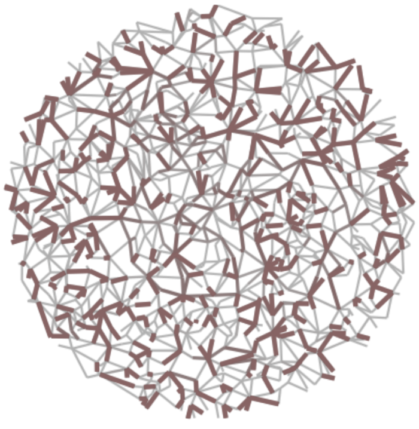

University of Ljubljana, Faculty of Computer and Information Science
Spanning tree of a network or a graph is a subgraph connecting all the nodes with the minimum number of edges. Spanning tree retains the connectivity of a network and possibly other structural properties, and is one of the simplest techniques for network simplification or sampling, and for revealing its backbone or skeleton. The Prim’s algorithm and the Kruskal’s algorithm are well known algorithms for computing a spanning tree of a weighted network. In this seminar, we study the performance of these algorithms on unweighted networks, and compare them to other alternatives. We show that the distances between the nodes and the diameter of a network are better preserved by an alternative algorithm based on the breadth-first search node traversal. Spanning trees computed with the breadth-first search algorithm retain short distances and small diameter of small-world networks, with a heavy-tailed node degree distribution. We conclude that, if a spanning tree is supposed to retain the distances between the nodes of an unweighted network, then the breadth-first search algorithm should be the preferred choice.
Abstraction techniques try to simplify a network for easier computation, visualization etc.
Network backbones try to retain the most important edges (e.g., by information flow).
Network sparsification technique that removes as many edges as possible.
Network skeletons try to retain the overall structure (e.g., with a simpler graph).
Network simplification technique that retains as many edges as possible.
(left) High-betweenness backbone and (right) high-salience skeleton of random geometric graph.

Spanning tree is a tree on all nodes in a network…
Network simplification technique that retains a tree.
…while convex skeleton is a tree of cliques in a network.
Network simplification technique that retains a tree of cliques.
(left) Spanning tree and (right) convex skeleton of scientific author collaboration network.
Which properties of real networks should be retained by a spanning tree?
Consider a large real network represented by a simple undirected and unweighted graph.
Let \(n\) and \(m\) be the number of network nodes and edges, and let \(\langle k\rangle\) denote the average degree.
\[\langle k\rangle=\frac{1}{n}\sum_i k_i=\frac{2m}{n}\]
Most large networks are sparse meaning that the density \(\rho\) goes to
\[\rho=\frac{m}{{n \choose 2}}=\frac{\langle k\rangle}{n-1}\rightarrow 0\mbox{ when }n\rightarrow\infty.\]
Thus, \(\langle k\rangle\) is a “modest” number say \(\approx 10\) which does not scale as \(\mathcal{O}(n)\).
Most large networks have one giant connected component consisting of say \(\approx 90\%\) nodes.
Many large networks show both high clustering \(\langle C\rangle\)
\[\langle C\rangle\gg\frac{\langle k\rangle}{n-1}\rightarrow 0\mbox{ when }n\rightarrow\infty\]
and short average distance between the nodes \(\langle d\rangle\) or small diameter \(d_{max}\)
\[d_{max}\geq\langle d\rangle\approx\frac{\log n}{\log\langle k\rangle}.\]
Node degree distribution \(p_k\) can be approximated by a heavy-tailed distribution (e.g., power-law)
\[p_k\sim k^{-\gamma}\mbox{ for }\gamma>1.\]
Node position and mixing, motifs and graphlets, block structure, network dynamics etc.
By definition, any spanning tree of a connected network with \(n\) nodes is connected with
\[m=n-1\mbox{, }\langle k\rangle=2-\frac{2}{n}\mbox{ and }\langle C\rangle =0.\]
However, which spanning tree algorithm computes a tree of real network with also
\[\langle d\rangle\sim\log n\mbox{ and }p_k\sim k^{-\gamma}?\]
Note that, in the case of a random tree, it almost surely holds \(\langle d\rangle\sim\sqrt{n}\).
(top) Node degree distribution \(p_k\) and (bottom) distance distribution \(p_d\) of skeletons of real networks.
Classical algorithms compute the minimum spanning tree of a weighted network.
(demonstration on blackboard)
(demonstration on blackboard)
(demonstration on blackboard)
Breadth-first search is the algorithm for computing distances in unweighted networks.
Other algorithms include depth-first search, beam search, Sollin’s algorithm etc.
Spanning trees of random graph computed by (left) Prim’s algorithm, (middle) Kruskal’s algorithm and (right) breadth-first search.
Note that (left) \(\langle d\rangle\sim\sqrt{n}\) in regular lattices, (middle) \(\langle d\rangle\sim\log n\) in random graphs and (right) \(\langle d\rangle\sim\frac{\log n}{\log\log n}\) in scale-free graphs.
Only spanning trees computed by breadth-first search retain the scaling of distances in different synthetic graphs.
We consider \(1016\) either temporal real networks or collections of similar networks.
| \(n\) | \(m\) | \(\langle k\rangle\) | |||
|---|---|---|---|---|---|
| Phys. Rev. E paper citations | temporal | \(46\) | \([3,37511]\) | \([2,135260]\) | \([1.3,7.2]\) |
| SICRIS author collaborations | temporal | \(25\) | \([18,1735]\) | \([42,6710]\) | \([4.1,7.7]\) |
| BioGRID protein interactions | / | \(40\) | \([5,19961]\) | \([4,238886]\) | \([1.6,83.1]\) |
| MathOverflow user interactions | temporal | \(75\) | \([2,20969]\) | \([1,86137]\) | \([1.0,10.1]\) |
| Facebook online friendships | / | \(97\) | \([762,41536]\) | \([16651,1590651]\) | \([39.1,116.2]\) |
| Oregon autonomous systems | temporal | \(733\) | \([103,6474]\) | \([239,12572]\) | \([3.4,4.7]\) |
By common agreement, \(\langle d\rangle\sim\log n\) in many large real networks (i.e. small-world networks).
Only spanning trees computed by breadth-first search retain the scaling (trend) of distances in different real networks.
By common agreement, \(p_k\sim k^{-\gamma}\) in many large real networks (i.e. scale-free networks).
Spanning trees computed by breadth-first search have scale-free degree distribution in different real networks.
Computation of a spanning tree has linear complexity \(\mathcal{O}(m)\) and can thus be benefitial in many applications.
Correlations between node centrality in real networks and their spanning trees computed by (left) breadth-first search, (middle) Kruskal’s algorithm and (right) Prim’s algorithm. We consider degree centrality \(DC\), closeness centrality \(CC\) and betweenness centrality \(BC\).
Spanning trees computed by breadth-first best retain node closeness centrality in different real networks.
Spanning tree of the SICRIS author collaboration network computed by breadth-first search. Node colors represent primary author disciplines consisting of (red) natural sciences, (green) engineering, (blue) medical sciences and other.
Spanning trees computed by breadth-first can provide clearer visualization of real networks.
In computational theory, balanced trees are standard data structure that enable fast manipulation \(\mathcal{O}(\log n)\) of collection with \(n\) elements. There exists many definitions of balance (e.g., AVL trees, splay trees, red-black trees, B/B\(^+\) trees etc.).
Can any of definitions of balance be generalized to some sort of approximate balance?
Could then all empirical results above be derived analytically without the need for simulations?